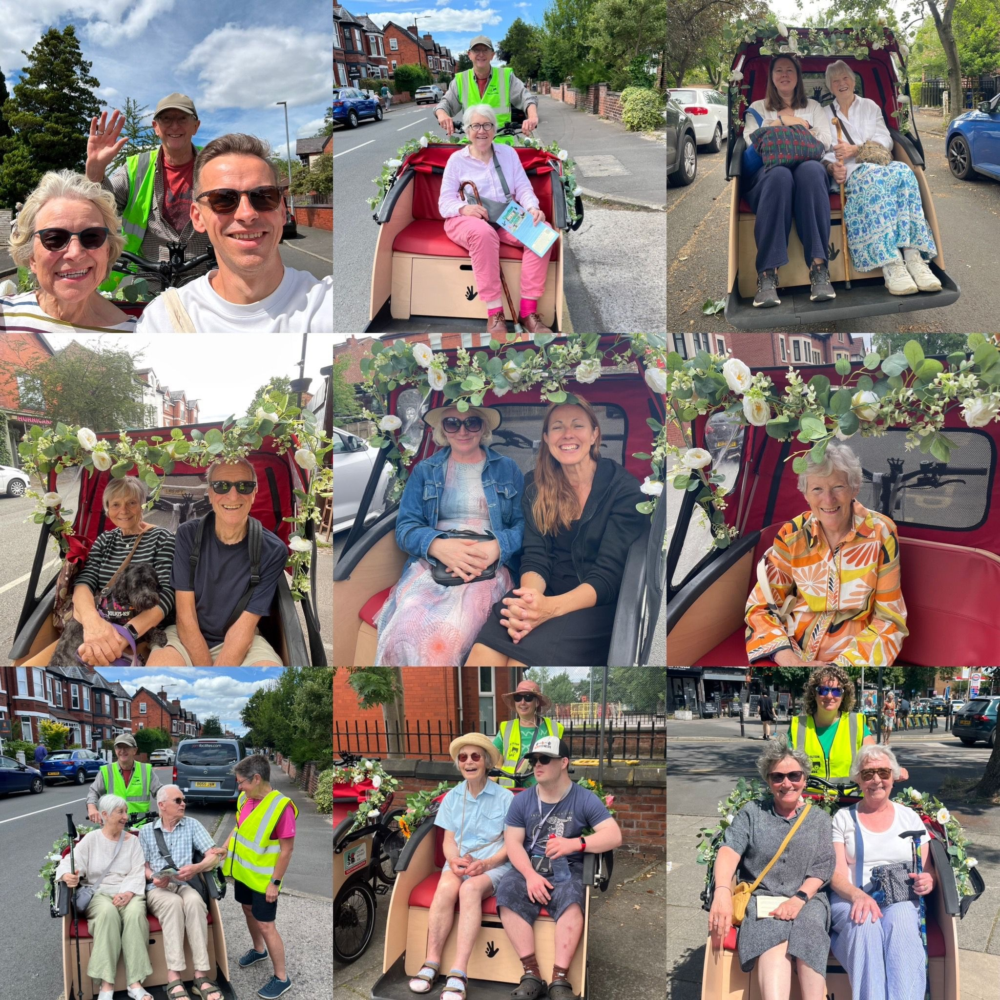
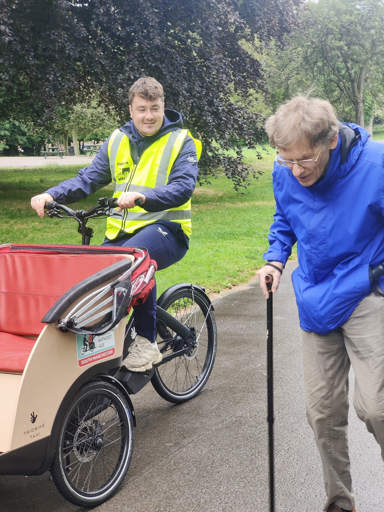
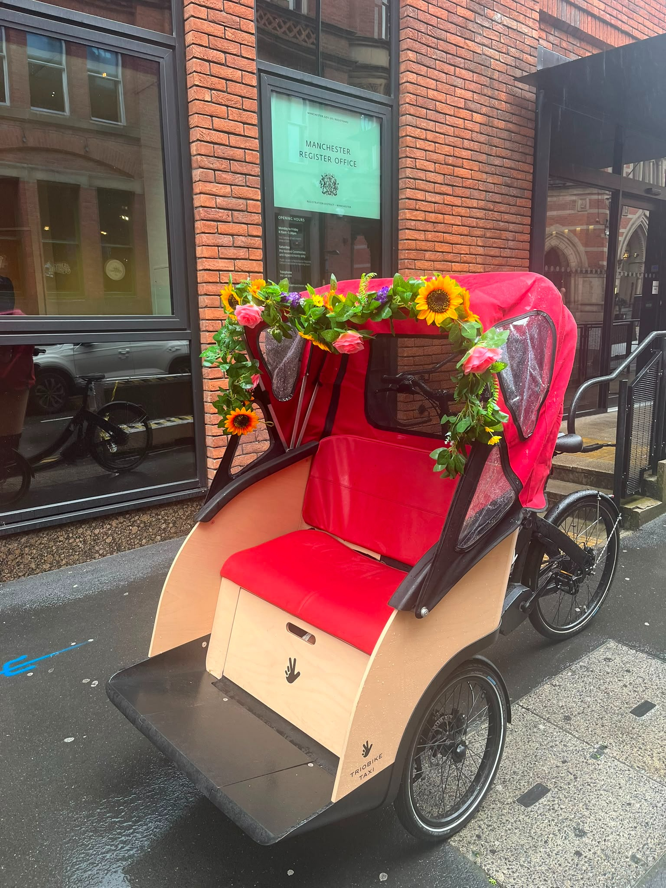
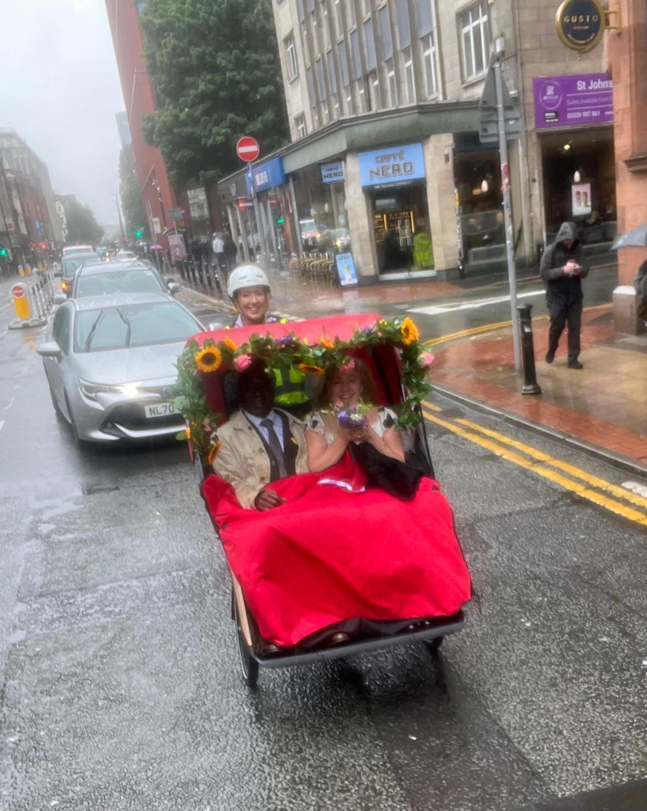
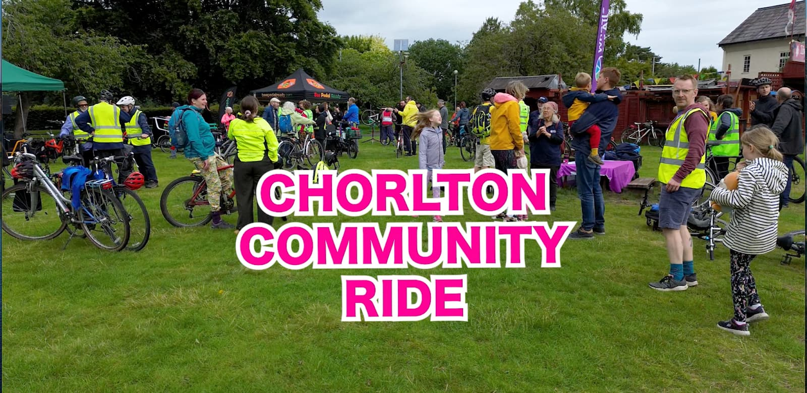
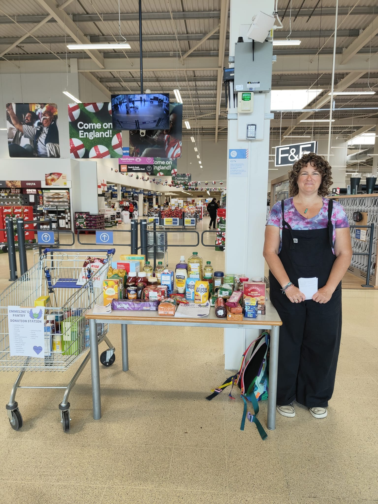
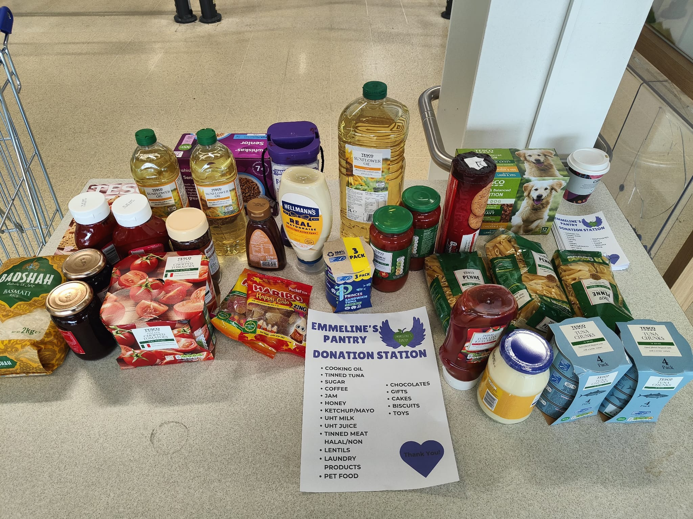
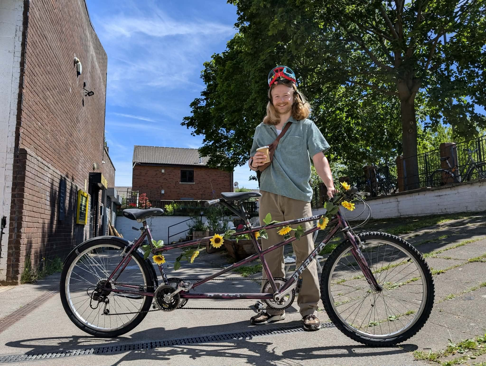
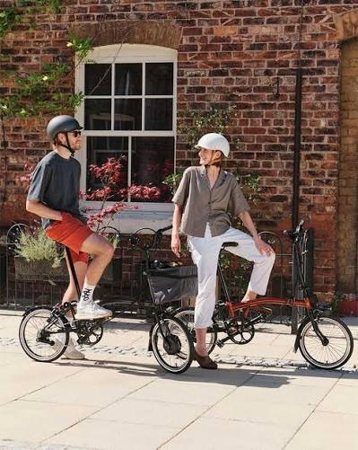

Hello Friends and Members of Chorlton Bikes,
We're really glad you're here. This newsletter is a chance to share what we've been up to - our riders, our partners, and the difference we're making together in Chorlton and beyond.
June has been a month of community celebrations, new milestones and strengthening partnerships across Greater Manchester. Here's what we've been up to.
June
2026
From trishaw rides at Chorlton Open Gardens to our first wedding booking and a warm welcome for Chorlton's new councillor, June has been full of memorable moments - with plenty more to look forward to this summer.










Thank you to everyone for the continued energy, care and commitment that keeps Chorlton Bikes moving forward - especially our riders who made Open Gardens and the wedding ride such special occasions.
Whether you're riding, volunteering, donating, or simply spreading the word, you're helping us build a stronger and more connected community. Here's to a busy summer ahead - and don't forget to save 6th September for the Community Ride! 🚲💚